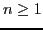
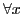
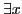

When describing command line or file line syntax the following
conventions apply. Items of important types are signified by
enclosing the item in angle brackets. For example,
<var>
is an item of type <var>. Presumably the types used are defined
in the text in close proximity to the first place they occur.
The unterminated ellipsis (...) is used to indicate
that arbitrarily many items of the type preceeding the ellipsis are
possible after it. For example,
<var> <var> ...
means at least two items of type <var>, separated by blanks.
and
<var><var>...
means at least two items of type <var>, not separated by blanks.
A terminated ellipsis is used to indicate a list of finite size (one
or more elements). For example,
var_1 ... var_n
means a list containing n items,  (the type of the items is
described in the surrounding text).
An optional flag or switch will be signified by
enclosing it in square brackets. For example:
[-]<var> ...
means at least one <var> item may or may not be
preceeded by the character '-'. The vertical bar ('|')
separating items between square brackets ('[', ']')
indicates a choice. For example:
[a|b|c]
means either a or b or c.
Various segments of an sbsat session will be highlighted using
font changes to assist the reader in understanding the nature of
command segments and results. Input and output will be specified
using the typewriter font. For example, these segments appear like
this
Reading file ...
The $ character at the beginning of a line is the command line
prompt and indicates that what follows is a command to be executed.
The prompt is usually followed by an sbsat command. For
example, the following is a simple sbsat command:
$ sbsat file.cnf
Programming options appear in italics to contrast with option
parameters which appear in plain text. For example, to get command
line help use this command:
$ sbsat -help
An input file has keywords in boldface such as in the following:
and ($1, 2)
The $ of the previous line is not the command line
prompt: its use in that context will be explained in
Section 9.1.
Boolean Quantifiers and operators shall be written in the usual
manner. Thus,
|  | means | For all values of |
|  | means | There exists a value for |
| means | negation or complementation | |
| means | logical ``or'' | |
| means | logical ``and'' | |
| means | logical ``implies'' | |
| means | logical ``exclusive-or'' | |
| means | equivalent | |
| means | ``if and only if'' |